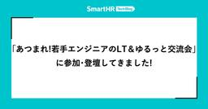
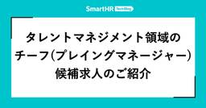

SmartHR Tech Blog
https://tech.smarthr.jp/
SmartHR 開発者ブログ
フィード

Claude Codeで開発期間を2.5か月から1か月に縮めた「ハーネス」の設計手法
SmartHR Tech Blog
こんにちは。SmartHRの情シス領域でプロダクトエンジニアをしているaniです。 入社して3か月が経ちました。この3か月で取り組んだのは、情シスプロダクトに新しい機能を1つ追加する開発です。まだ世に出していない機能なので、以降は「今回の機能」と書きます。当初の見積もりは実質工数でおおよそ2.5か月ほどでしたが、Claude Code向けの「ハーネス」を先に作ってから開発を始めたところ、大きな手戻りがないままほぼ1か月で実装を一通り終えられました。 この記事では、そのハーネスをなぜ作ったのか、どういう処理の流れになっているのか、そしてうまくいった点と工夫した点を紹介します。 ハーネスは、AIエ…
1時間前

「あつまれ！若手エンジニアのLT＆ゆるっと交流会」に参加・登壇してきました！
SmartHR Tech Blog
こんにちは！プロダクトエンジニアのitojumです。 2026年8月28日にモビルス株式会社が主催した「あつまれ！若手エンジニアのLT＆ゆるっと交流会」というイベントに参加・登壇してきました。 この記事では、イベントの模様や登壇内容をご紹介します。 「あつまれ！若手エンジニアのLT＆ゆるっと交流会」とは このイベントは、若手エンジニアの交流を目的に開催されました。今回は新卒研修が終わった26新卒エンジニアを対象に、研修や業務での学びを共有し合うLT会が行われました。 前半のLTセッションでは、計6名の登壇者が研修で得た知見や現場で触れた技術について5分間で発表しました。後半の懇親会では軽食を囲…
20時間前

タレントマネジメント領域でチーフ（プレイングマネージャー）候補を募集しています
SmartHR Tech Blog
こんにちは！SmartHRのタレントマネジメントプロダクト開発本部でマネージャーをしている山本です。 この記事では、タレントマネジメント領域で募集している「チーフ（プレイングマネージャー）候補」のポジションを説明します。主に次の内容を記載しています。 プレイングマネージャーとは何か どのプロダクトを担当するのか どのような挑戦や経験が得られるか 募集しているポジション 募集しているのは、ウェブアプリケーションエンジニア（プレイングマネージャー候補）のポジションです。 open.talentio.com 組織図では、以下の赤枠で囲った部分を募集しています。 赤枠が今回募集しているチーフのポジショ…
2日前

SmartHRのタレントマネジメントプロダクトにご興味をお持ちの方へ
SmartHR Tech Blog
この記事は、SmartHRのタレントマネジメント領域にご興味をお持ちの方向けに、私たちがどのようなプロダクトを作り、その開発にどのような難しさや面白さがあるのかを紹介するものです。 お気軽にカジュアル面談のお申し込みをお待ちしております！ 募集中の職種 SmartHR エンジニア採用ページにて、タレントマネジメント領域の求人を掲載しています。ぜひご覧ください！ 【事業領域】ウェブアプリケーションエンジニア（プレイングマネージャー候補） なぜSmartHRがタレントマネジメントプロダクトを開発するのか 突然ですが、質問です。 あなたの組織の離職率が30%だったとします。原因はどこにあり、何から手…
6日前

結合テスト工程へのAI導入の現在地 ── あるスクラムチームの半年間の試行錯誤
SmartHR Tech Blog
こんにちは。SmartHRでプロダクトエンジニアをしているdelhi09です。私が所属するチームは「基本機能」と呼ばれるSmartHR最大のRailsアプリケーションの開発に携わっています。 私たちのチームでは2026年前期の約半年間にわたり、本業のフィーチャー開発の傍らで結合テストへのAI活用の検証を進めてきました。本記事はその試行錯誤の総括と知見の共有です。 前置きしておくと、AIを活用したことで結合テストが速く楽になりましたというような成功談ではありません。むしろうまくいかなかった話のほうが多いです。しかし、うまくいかなかった話を共有することで、読んでいただいた皆さんにとって、結合テスト…
8日前
SmartHRは完成されていない。3人の本部長が語る、事業ごとのプロダクトマネージャーの戦い
SmartHR Tech Blog
SmartHRで採用を担当している菅野（@amicus8412）です。 「SmartHRはもう完成された会社なのではないか」。そう見られることが増えてきたと感じています。 プロダクトのラインナップが揃い、事業規模も拡大してきたからこそ生まれる印象かもしれません。しかし実際には、SmartHRの中では成熟度もフェーズもまったく異なる事業が同時に動いています。 今回は、その実態を伝えるため、人事給与基幹システム、タレントマネジメント、ESP（Employee Service Platform／従業員ポータル）および情シスソリューションの各領域で、プロダクトマネジメント組織のマネジメントを担う塚本真…
9日前
ACM KDD2026 に参加しました！
SmartHR Tech Blog
SmartHRプロダクトエンジニアのmashi6nです。 SmartHRではさまざまなAIプロダクトの開発に取り組んでいます。 その一環として、AI・データ活用に関する最新の研究動向を把握し、今後のプロダクト開発や研究開発に活かすため、2026年8月9日〜13日に韓国・済州島で開催された「ACM KDD2026」に参加しました。 SmartHRにとって、今回が初めての国際学術会議への参加です！ 社内からは私とプロダクトエンジニアの kakifry が現地を訪れ、基礎研究から産業応用、AIエージェント開発の実践まで、幅広いセッションを聴講しました。 本記事では、会場の様子と特に印象に残った技術ト…
12日前
全プロダクト横断の権限基盤をつくるユニットに、エンジニアとして入社しました
SmartHR Tech Blog
自己紹介 こんにちは、SmartHRでプロダクトエンジニアを務めているhigaです。2026年5月にSmartHRに入社しました。これまではバックエンド領域を中心に、ECサイトの決済機能や金融系のWebサービスの開発を担当してきました。 現在はプロダクト統括本部の権限基盤ユニットに所属しており、主に権限基盤の開発を担当しています。入社して4ヶ月ほどたち、権限基盤ユニットの一員として働く中で感じたことをお伝えできればと思います。 権限基盤ユニットがつくっているもの 私が配属された権限基盤ユニットは、SmartHRの全プロダクトが利用する権限の仕組みを開発しています。 SmartHRはタレントマネ…
13日前
入社3ヶ月のQAEが振り返る、立ち上がりの日々とこれから
SmartHR Tech Blog
はじめまして！勤怠管理・給与計算ユニットでQAE（QAエンジニア）をしているjuniです。2026年5月にSmartHRへ入社し、給与計算プロダクトの品質保証を担当しています。 入社から3ヶ月が経ち、気づけば4ヶ月目に入っています。この記事では、最初の3ヶ月でやってきたことと、これから注力していくことを紹介します。立ち上がり方は担当プロダクトや状況によってさまざまだと思いますが、一つの例として、SmartHRの品質保証に興味がある方に、入社後にどう立ち上がり、その先で何に取り組もうとしているのかを知ってもらえたら嬉しいです。 これまでの経歴 前職までの経歴を簡単にご紹介します。 1社目：SIe…
13日前
SmartHRは技術的負債に向き合うConference 2026にセッションスポンサーとして協賛し、1名が登壇します
SmartHR Tech Blog
SmartHRは、2026年9月16日（水）・17日（木）にオンラインで開催される「技術的負債に向き合うConference 2026」にセッションスポンサーとして協賛し、1名が登壇します！ technical-debt-con.findy-tools.io 登壇セッション SmartHRのDeveloper Productivity Engineeringチームから、有友大輔（@osyoyu）が登壇します！ 「The Science of 技術的負債」 登壇者：有友大輔 日時：9月17日（木）12:40 - 13:10 会場：Room A 抽象的になりがちな技術的負債を、どのように捉えて定量…
14日前
AI活用で生まれた別のコスト
SmartHR Tech Blog
SmartHRで給与計算機能の開発をしているプロダクトエンジニアの@rです。 開発のいたるところでAIが活用されるようになってきました。弊社でも、コーディングはもとよりPRD（プロダクト要求仕様書）の作成、チケットの作成、テスト計画書の作成、ヘルプページの作成ほかあらゆる成果物の作成でAIの利用が当たり前になってきており、私自身も毎日使っています。 AIによって、アウトプットを出す側の時間は大きく短縮され、AIがなかった頃の仕事の仕方にはもう戻れそうにありません。 一方で、成果物の読み手やレビュワーという立場からみると、AIが生成する文章の乱立が別の場所でコストを生んでいるかもしれない、と思う…
14日前
AIエージェント開発ハンズオンを開催しました
SmartHR Tech Blog
こんにちは、SmartHR AI開発部のbiwakoです。先日、社内向けに「AIエージェント開発ハンズオン」を開催しました。 本ハンズオンは、レストラン予約エージェントを題材に、Tool Call、ReAct、MCP、Skills、エージェントフレームワークまでを段階的に実装する内容です。本記事では、このハンズオンの目的・背景、当日の様子、振り返りを紹介します。 開催の目的・背景 本ハンズオンの目的は、SmartHRのエンジニアや開発に携わる社員が実装を通じてAIエージェントの仕組みを学び、自らAI機能を開発するための第一歩を後押しすることです。AI開発部では、各プロダクトチームがそれぞれのプ…
15日前
品質を支える仕組みをチームで作る —— 開発プロセスの可視化と改善
SmartHR Tech Blog
こんにちは！SmartHRでQAエンジニア（QAE）をしているyugeです。前回の記事で触れたDuolingoの連続記録が、ついに1,500日を超えました。日々の小さな積み重ねによって、以前は聞き取りづらかった音が聞こえるようになるなど、着実な変化を実感しています。 今回は、日々の開発プロセスで品質を守れる状態を目指し、チームで進めてきた改善の取り組みを紹介します。 体制変更で見えてきた、従来プロセスの課題 個々の判断に支えられていたプロセス 私は現在、プロダクト基盤ユニット内で権限基盤チームのインプロセスQAとして活動しています。このチームでは、体制が変わり、複数の開発を並行して進めるなど、…
16日前
【28卒】学生向け新卒LT会（8月）を開催しました！
SmartHR Tech Blog
こんにちは！SmartHRでプロダクト基盤の開発をしている、新卒1期生（2026年入社）プロダクトエンジニアのitojumです！ SmartHRでは、2028年入社予定の学生を対象に「新卒3期生」の採用を行っています。 今年からの新たな取り組みとして、SmartHRの新卒エンジニアによる学生向けライトニングトーク（LT）会を開催しました！ 本記事では新卒LT会の様子をお届けします。 新卒LT会の様子 参加者情報 参加してくださった学生: 16名 登壇者: 8名 0期生（2025年入社）: 2名 1期生（2026年入社）: 4名 2期生（2027年入社・内定者）: 1名 サマーインターンシップの…
19日前
関西エンジニアのLT会「第五回 唐揚げ会」を開催しました！
SmartHR Tech Blog
こんにちは。プロダクトエンジニアのゆきです。 2026/07/24に、SmartHR 大阪オフィスで 第五回 唐揚げ会 を開催しました。 この記事では、イベントの模様についてレポートします。 唐揚げ会とは 唐揚げ会とは、関西のエンジニアの交流を目的に、唐揚げを楽しみながらテックな話題などについてラフに話すイベントです。 これまでの開催レポートは以下をご覧ください。 関西エンジニアのLT会『第一回 唐揚げ会』を開催しました！ - 虎の穴ラボ技術ブログ 関西エンジニアのLT会「第二回 唐揚げ会」を開催しました！ - SmartHR Tech Blog 関西エンジニアのLT会「第三回 唐揚げ会」を開…
21日前
SmartHRはKaigi on Rails 2026で学生参加支援（スカラシップ）を実施します！
SmartHR Tech Blog
SmartHR でプロダクトエンジニアをしている @udzura です。 2026年10月16日（金）・17日（土）に、ベルサール渋谷ガーデンにてKaigi on Rails 2026が開催されます。 SmartHR では今回はじめての試みとして、Kaigi on Rails 2026 に参加したい学生のみなさんのチケット代・交通費・宿泊費について、 最大5名 支援します。 この記事では、支援の概要と応募方法についてご案内します。 Kaigi on Rails とは Kaigi on Rails は名前のとおり Ruby on Rails を話題の中心に据えつつ、フロントエンドやプロトコルなど…
22日前
不具合情報の集約基盤を整え、品質改善に活かすまで
SmartHR Tech Blog
こんにちは、SmartHR 品質保証本部 Directorのtarappoです。 最近は組織周りの話を多くしてきましたが、今回は「不具合に関する情報を集める基盤」を整えたことについて、かんたんに紹介しようかと思います。 本記事では「どういった基盤を整えたのか」「今、どこまで整ってきているのか」、そしてそれによって「なにができるようになってきているのか」を順に説明していきます。 不具合に関する情報を集める基盤 組織の規模が小さいうちは、周りで起きていることが見えやすく、大きな問題になる前に対処しやすかったりします。 しかし、会社やプロダクトがスケールしていくと定性データといえる「肌感」だけでおこ…
23日前
「エージェントが対応し、人間が評価する」——SmartHR CREが開発する「DESK AIエージェント」
SmartHR Tech Blog
はじめに こんにちは。SmartHRでCRE（Customer Reliability Engineer）として、プロダクトに関する技術的な問い合わせ対応や改善活動に取り組んでいるs_arikawaです。 SmartHRのCREは、お客さまから寄せられる技術的な問い合わせへの対応や調査だけでなく、そこから得た知見をプロダクトの改善につなげる役割を担っています。CREの立ち上げ背景や具体的な活動については、SmartHRのCREに関する記事一覧やSmartHRのCREチームに興味をお持ちの方へをご覧ください。 なかでも問い合わせ対応では、過去の対応履歴やヘルプページ、仕様書など、さまざまな情報を…
1ヶ月前
Sandboxテスト 〜フロントエンドとAI時代の変化の激しさへの挑戦〜
SmartHR Tech Blog
こんにちは。AIアシスタントの開発をしているnukosukeです。最近は競馬の機械学習モデル作りにハマっています。回収率はなんとマイナスです。 今回はフロントエンドのテストとして、AIアシスタントで新しく構築した「Sandboxテスト」の仕組みと構築過程を、具体的なコード例や課題も含めてご紹介します。 Sandboxテストとは？ Sandboxテストはフロントエンドに閉じた結合テスト、とAIアシスタントチームでは定義しています(後述しますが、一般的な名称ではありません)。 具体的には、バックエンド（Rails）を起動せず、PrismによるOpenAPIモックサーバーのみで動かすPlaywrig…
1ヶ月前
2年かけてたどり着いた1on1の形 —— メンバーと一緒に1on1の最適解を探る
SmartHR Tech Blog
SmartHRの人給基幹プロダクト開発本部で、チーフ(プレイングマネージャー)をしている山下です。 私は2024年からチーフになり、現在2年が経ちました。 SmartHRでは制度上、評価者と被評価者が隔週で1on1（定期的に行う1対1の対話）を実施するよう決められています。 チーフになりたての頃、メンバーとの1on1に対して苦手意識がありました。 何を話せばいいのかわからない、メンバーにとって有意義な時間になっているのだろうか？ 当時、上長にはそんな相談をよくしていました。 わからないながらも、書籍を読んだり、マネジメント経験のある社内の人の事例を聞いたりすることで自分の中で1on1としての形…
1ヶ月前
認証がプロダクトの足かせにならない世界へ —— 認証・認可基盤ユニットの発足と挑戦
SmartHR Tech Blog
こんにちは。SmartHRでプロダクトエンジニアをしているbmf_sanです。プロダクト基盤開発本部の認証・認可基盤ユニットで、チーフを担当しています。 2026年2月、SmartHRに「認証・認可基盤ユニット」という新しいチームが発足しました。その名の通り、SmartHRの認証・認可領域を専任で担うユニットです。 本記事では、なぜSmartHRが今、認証・認可の基盤づくりに改めて本気で取り組むのか、そして私たちのチームが何を目指し、何をやっているのかを紹介します。 認証・認可基盤ユニットとは SmartHRのプロダクト基盤開発本部は、権限管理・課金・従業員データ活用など、プロダクト横断の基盤…
1ヶ月前
IT Women Summit —— テクノロジーの力で、組織と未来を動かす女性たちレポート
SmartHR Tech Blog
こんにちは。SmartHRのアクセシビリティ部マネージャーの坂巻です。SmartHRは、2026年5月26日にオンラインで開催された「IT Women Summit —— テクノロジーの力で、組織と未来を動かす女性たち」にオンライン支援スポンサーとして協賛しました。 また、アクセシビリティ部から私、坂巻が専門性を「組織の力」へ組み替える、エキスパートの仕事というタイトルで登壇させていただきました。当日の発表をご視聴いただいた皆様、ありがとうございました。 IT Women Summitとは？ IT Woman Summitは、翔泳社が主催する、IT領域で活躍する女性を応援するためのカンファレン…
1ヶ月前
本を書くハッカソンイベントBookathon Vol.2レポート —— 週末だけで6冊が完成！
SmartHR Tech Blog
SmartHRは、2026年7月10日（金）から12日（日）にかけて東京・六本木のSmartHR Spaceで行われた「Bookathon Vol.2 - 本を書くハッカソンイベント」に協賛しました。 本レポートでは、その模様をお届けします。 目次 目次 Bookathon - 本を書くハッカソンイベントとは おやつを全紹介！ Day 1 —— キックオフ、チーム編成、環境構築 Day 2 —— 執筆、編集者アドバイス Day 3 —— 執筆、発表会、表彰式、懇親会 最後の追い込み 発表会 審査 表彰式 懇親会 SmartHRメンバーの感想 itojumさん naoh_nakさん まとめ We…
1ヶ月前
Innovative Crosstalk Jamboree Geeks’26に参加・登壇してきました！
SmartHR Tech Blog
こんにちは！SmartHRの業務連携基盤ユニットでプロダクトエンジニアをしているいとじゅんです！SmartHRの新卒1期生として2026年に入社しました。 先日8月2日に開催された「Innovative Crosstalk Jamboree Geeks’26」に参加して、30分セッションで登壇してきましたので、登壇のお話や聴講させていただいたセッションなどを紹介します！ 「Innovative Crosstalk Jamboree Geeks’26」とは このカンファレンスは、AI活用と異文化交流をテーマに掲げて開催されました。技術の共有だけでなく、エンタメや新しいテーマへの挑戦を重視している…
1ヶ月前
第17回SmartHR LT大会レポート ── カンファレンス土産と自作ツールが集結！
SmartHR Tech Blog
こんにちは。SmartHRで給与計算機能を開発している nobu です。 この記事では、2026年6月19日に開催した第17回SmartHR LT大会の模様を、NGTさん・mashi6nさんと共にお届けします。 目次 目次 SmartHR LT大会とは 参加者情報 発表レポート ドメエキの話をちゃんと聞こう！（qwyng さん） bloghrの“真実”（osyoyu さん） TSKaigi 2026 にいってきたよ（kazuemon さん） Google Slideをやめたい（nori さん） RubyistがLaravel Live Japan行ってきましたレポ（mktakuya さん） は…
1ヶ月前
SmartHR最大のRailsアプリケーションにコネクションプーラーを導入しました！── 2年前の障害対応から学んだスケーラビリティと運用のリアル
SmartHR Tech Blog
こんにちは。スケーラビリティエンジニアリングユニットの @kawaida です。 最近、トークンマキシングならぬポケモンマキシングをして、ぽこあポケモンの図鑑コンプしました。（時が過ぎるのははやい） ２年前には「基本機能」と呼ばれる SmartHR 最大の Rails アプリケーションに、コネクションプーラーを導入しました。 この記事では、導入にあたって検討した技術的な背景や選定理由をご紹介します。 背景 SmartHR の「基本機能」では Cloud Run を使用しており、リクエスト数や負荷の増加によってオートスケールします。 サービスの成長に伴ってトラフィックが増えると、スケールアウトし…
1ヶ月前
SmartHRの信頼性を支える —— 人事マスタエリアのQAエンジニアが今取り組んでいること
SmartHR Tech Blog
こんにちは。SmartHR品質保証本部、人事マスタユニットのkanna、kaomiです。 2026年3月に公開した「SmartHRの人事マスタを守る —— QAエンジニアとして挑む、品質保証の現場」では、人事マスタユニットが抱える品質保証の課題と、それに向き合うために始めた取り組みを紹介しました。 前回の記事から数か月が経ち、私たちは開発チームとともに、品質リスクを開発の早い段階で見つけ、継続的に改善する仕組みづくりを進めています。この記事では、前回お伝えした取り組みの続編として、人事マスタエリアで求められる品質保証と、QAエンジニアが現在どのように「信頼性」を支えているかを紹介します。 人事…
1ヶ月前
きのこカンファレンス 2026 in 関西参加レポート —— それぞれのキャリアの縁側を垣間見た夏
SmartHR Tech Blog
こんにちは、プロダクト基盤開発部のR&Dユニットでプロダクトエンジニアをしているydahです。 2026年8月1日（土）に大阪のBlooming Campで開催された「きのこカンファレンス 2026 in 関西」に参加し、「わからない話を追いかけたら、プログラミング言語を作る側にいた」というタイトルで登壇しました。 luccafort.connpass.com この記事では、きのこカンファレンス 2026 in 関西の雰囲気と、発表した内容、参加して感じたことを書きます。 きのこカンファレンス 2026 in 関西の会場となったBlooming Campのエントランスエリア きのこカンファレン…
1ヶ月前
横断フロントエンドユニットの取り組み —— 技術的負債の解消から AI 活用まで
SmartHR Tech Blog
こんにちは、SmartHR でプロダクトエンジニアをしている negiandleek と sakata です。 私たちは横断フロントエンドユニットに所属し、SmartHR 基本機能のフロントエンドに関する課題解決に取り組んでいます。 本記事では、横断フロントエンドユニットが組成された経緯とこれまでの取り組み、そして将来的な展望を紹介します。 横断フロントエンドユニットが組成された経緯 SmartHR の基本機能は、従業員情報の管理を担う基盤となるプロダクトで、歴史が古く大きなものです。 そのため、以下のような課題を抱えていました。 全体的にモジュールバージョンが古く、更新されていないため、セキ…
1ヶ月前
SmartHR全体のAI開発を加速する —— これからのAI開発部が担う3つの役割
SmartHR Tech Blog
はじめに こんにちは！技術統括本部AI開発部でEMをしているbiwakoです。2026年4月に入社し、4ヶ月が経過しました。 入社前はSmartHRに馴染めるか不安でいっぱいでしたが、素晴らしいカルチャー・同僚のおかげで「まだ4ヶ月か」と思うほど濃い時間を楽しめています。 AI開発部では現在、AI開発を一部の専門チームに閉じず、各プロダクトチームが安全かつ迅速に実践できる体制作りを進めています。 この記事では、AI開発部が目指す体制と、これから入社する方が挑戦できることをご紹介します。 なお、この記事での「AI開発」とは、AI機能やAIプロダクトの開発を指します。注釈がない限りは「Coding…
2ヶ月前